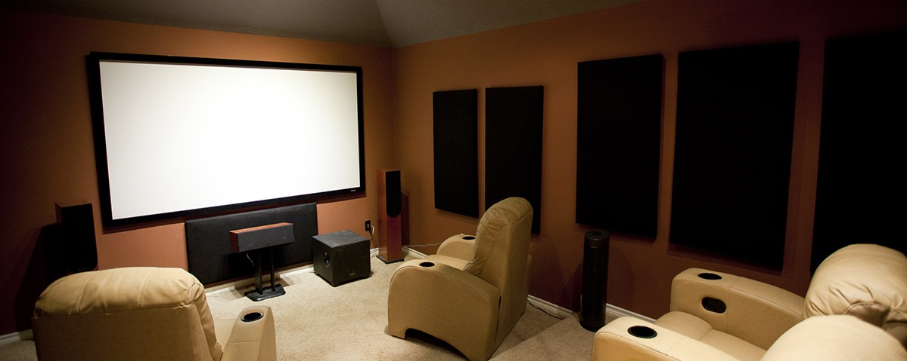

Існують різні поняття звукового формату.
Формат представлення звукових даних в цифровому вигляді залежить від способу квантування аналогово-цифровим перетворювачем (АЦП). У звукотехніці сьогодні найбільш поширені два види квантування:
Найчастіше розрядність квантування і частоту дискретизації вказують для різних звукових пристроїв запису і відтворення як формат представлення цифрового звуку (24 біта / 192 кГц; 16 біт / 48 кГц).
Формат файлу визначає структуру і особливості подання звукових даних при зберіганні на накопичувачі ПК. Для усунення надмірності аудіо використовуються аудіокодеки, за допомогою яких проводиться стиснення аудіоданих. Виділяють три групи звукових форматів файлів:
Слід мати на увазі, що до аудіофайлів не відносяться такі музичні формати як MIDI, або файли нотних редакторів, які являють собою лише послідовність команд для музичного інструменту, однак не містять інформації власне про звук.
Формати носіїв цифрового звуку застосовують як для масового поширення звукових записів (CD, SACD), так і в професійному звукозаписі (DAT, минидиск).
Для систем просторового звучання також можна виділити формати звуку, які в основному є звуковим багатоканальним супроводом до кінофільмів. Такі системи мають цілі сімейства форматів від двох великих конкуруючих компаній — Digital Theater Systems Inc. (DTS) і Dolby Laboratories Inc. (Dolby Digital).
Також форматом називають кількість каналів в системах багатоканального звуку (5.1; 7.1). Спочатку така система була розроблена для кінотеатрів, але згодом була розширена для систем домашнього кінотеатру.